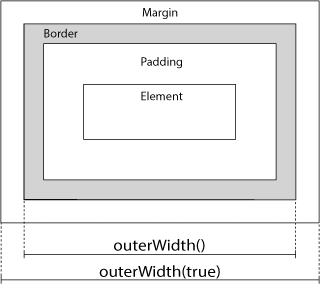

基本可拖动（draggable）组件事件的学习
onDrag事件：拖动期间触发。例子：可拖拽对象只能在它的父容器中拖动。
onDrag事件：拖动期间触发。例子：可拖拽对象40*40的格子拖动.
可拖动（draggable）组件get：
简介：就是可拖动的元素，拖动后元素会脱离文档流。
用法：div的class为easyui-draggable。
属性：在data-options="key:value,key:value"中配置 或者 在js中$('#dd').draggable({key:value,key:value})配置
data-options：↓
handle：#id，必须是div的子元素的id。默认值为null，为整个div。
disabled：boolean，是否可以拖动。返回false则不触发。
事件：
onDrag(e,source)：拖动期间触发。e是拖动事件、source是拖拽的DOM元素，返回是boolean，返回false则不会触发拖动期间（也就是拖动不连贯，会直接到拖到的位置）。
入参e.data属性：含有元素的一些数据信息。
入参e.data.方向属性：left right up，以拖动前的位置为中心的相对偏移位置。
入参e.data.target：移动后的元素对象。
入参e.data.parent：移动元素对象的父节点。
额外学习：
overflow：html的css属性， 属性规定如何处理不符合元素框内的内容，参数值有以下4种↓
visible：默认值，不符合元素框的内容就超出元素框显示，可以点击选中。
hidden：不符合元素框的内容就超出元素框被元素框覆盖，无法操作被隐藏掉的内容。
scroll：不符合元素框的内容会被隐藏掉，元素框提供上下滚动条以便查看其余的内容以便查看隐藏的内容。
auto：由浏览器决定如何显示，效果和scroll一样
jquery的获取元素宽度和高度方法：
width() - 设置或返回元素的宽度。
height() - 设置或返回元素的高度。
innerWidth() - 返回元素的宽度（包含 padding）。
innerHeight() - 返回元素的高度（包含 padding）。
outerHeight() - 返回元素的高度（包含 padding 和 border）
outerWidth() - 返回元素的宽度（包含 padding 和 border）
outerHeight(true) - 返回元素的高度（包含 padding 和 border 和 margin）
outerWidth(true) - 返回元素的宽度（包含 padding 和 border 和 margin）
